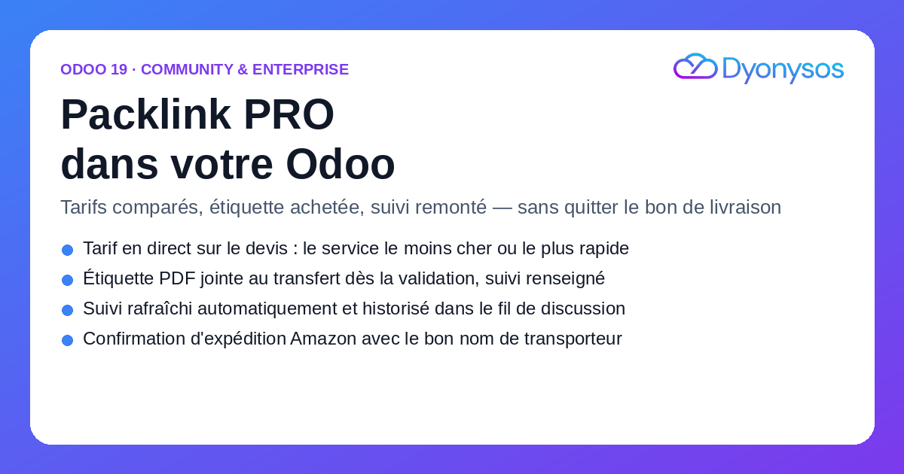
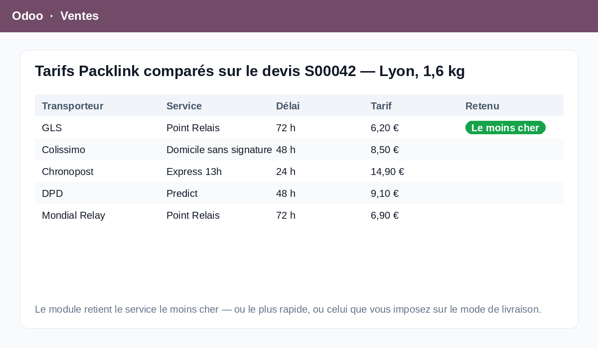
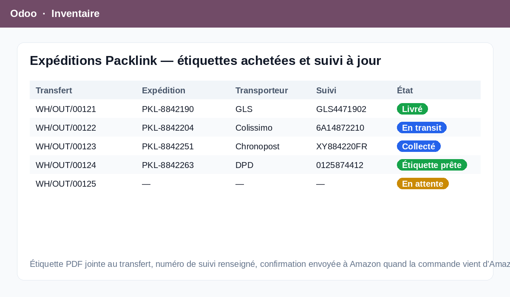

Vous créez un mode de livraison de type Packlink PRO, vous y rattachez votre clé API, et c'est fini : sur chaque devis, le bouton « Obtenir le tarif » interroge Packlink avec le poids et les dimensions réels du colis, compare les transporteurs disponibles et retient celui que vous avez choisi de privilégier.
Le tarif renvoyé passe par la marge et la marge fixe du mode de livraison Odoo : vous facturez le port à votre prix, pas à celui du transporteur.
Compatible Odoo 19 Community et Enterprise.
Au choix : le service le moins cher, le plus rapide, ou un service Packlink imposé par son identifiant lorsque vous avez négocié un contrat précis. Le poids vient des articles de l'envoi, les dimensions du mode de livraison, avec des valeurs de repli pour que la demande de tarif n'échoue jamais faute de données.
À la validation du bon de livraison, l'expédition est créée chez Packlink, l'étiquette PDF est téléchargée et jointe au transfert, le numéro de suivi est renseigné sur le transfert et remonte sur la commande. Si l'étiquette n'est pas encore prête chez le transporteur, l'expédition reste valide et un bouton la récupère plus tard.
Une tâche planifiée rafraîchit toutes les six heures les expéditions en cours : l'état Packlink est mis à jour et chaque étape est notée dans le fil de discussion du transfert. Un bouton annule l'expédition côté Packlink tant qu'elle n'a pas été collectée, et libère le numéro de suivi.
Avec notre module Amazon Connector for Odoo Community, la confirmation d'expédition envoyée à Amazon reprend le nom réel du transporteur retenu par Packlink — Chronopost, Colissimo, DHL, DPD, GLS, UPS, Mondial Relay, SEUR, BRT, Evri… — et non un « Other » générique qui dégrade votre note vendeur.
Aucune dépendance entre les deux modules : chacun s'installe seul, et le pont s'active tout seul quand les deux sont présents.
Le journal des appels trace chaque opération : tarif, expédition, étiquette, suivi, annulation, avec la durée, le statut et le message d'erreur éventuel. Il se purge tout seul au bout de quatre-vingt-dix jours.

Un seul point d'entrée réseau dans tout le module : délai d'attente, nouvelles tentatives avec temporisation croissante sur les erreurs 429 et 5xx, taille de réponse plafonnée, messages d'erreur lisibles. Une expédition en échec n'interrompt jamais le traitement des suivantes.
L'URL de l'API, l'en-tête d'authentification et son préfixe éventuel sont des champs du compte, réservés aux administrateurs techniques. Si Packlink fait évoluer son API, vous ajustez le paramétrage sans attendre une nouvelle version du module.
Autant de comptes Packlink que de sociétés, chacun avec son adresse de collecte et sa stratégie de sélection. Les règles d'enregistrement multi-sociétés d'Odoo s'appliquent aux comptes comme au journal. La clé API n'est visible que des administrateurs techniques.
Un compte Packlink PRO et sa clé API (Paramètres → Intégrations dans votre espace Packlink). La bibliothèque Python requests doit être installée sur le serveur — c'est le cas d'une installation Odoo standard.
Le module couvre les envois sortants : tarif, création d'expédition, étiquette, suivi et annulation. Il ne gère pas les retours clients ni les points relais choisis par l'acheteur sur le site web, et n'ajoute pas de sélecteur de point relais dans le tunnel de commande. Les tarifs affichés sont ceux que Packlink renvoie pour votre compte, marge Odoo comprise.
Édition et intégration de modules Odoo.
Une question, un besoin d'adaptation, un transporteur supplémentaire ?
welcome@dyonysos.fr
https://dyonysos.fr
Support inclus : installation, paramétrage de la clé Packlink, correction des anomalies.